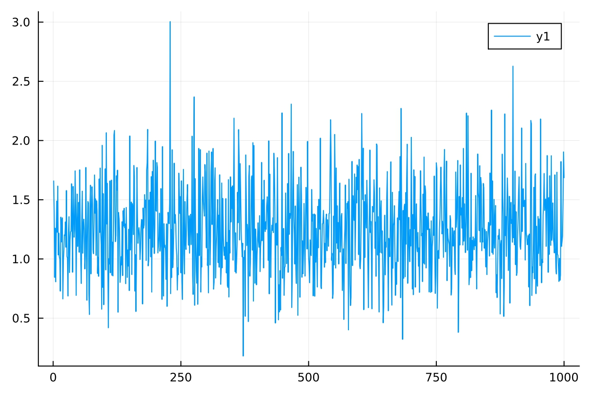

yaroslav korobka
CERGE-EI, PhD Student

work in progress
"Generalized AKM: Theory and Evidence"
(w/
Francesco Del Prato
and
Paolo Zacchia
)
"Model Averaging with a Diverging Number of Covariates"
(w/
Stanislav Anatolyev
)
"Semiparametric Specification Testing with Many Regressors"
working
publications
software
teaching
cv